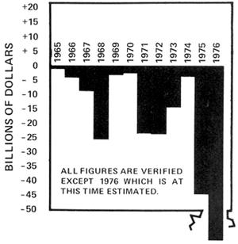

If you have any doubts about where inflation really comes from, the chart above-which records the surplus or deficit rolled up by the U.S. federal government in each of the past 11 years-should set you straight.
Yes, that's right. Good times or bad, there hasn't been a single surplus in any one of the past 11 years. Quite the contrary. The national debt has increased by a total of 153.5 billion dollars during that period. And-hang on to your hat!-Uncle Sam is adding another whopping 59.9 billion to the total in 1976 alone. And, according to Business Week editor William Wolman, "The federal government will be running a deficit of 135 billion dollars in two years."
Of course, ours isn't the only "printing press money" now flooding the world. Led by France, one European nation after another is currently "fighting" the international recession by creating staggering (for them) deficits of their own. And that's the good news.
The bad news is the International Monetary Fund's "brilliant" answer to everyone's present financial woes: an "all paper exchange rate plan" which will allow the world's governments to "defeat" inflation by "shutting gold-that barbaric metal-completely out of financial circles and limiting it to the commodities market where it belongs".
Sorry, Charlie, but it ain't gonna work that way. Yes, the very short-term result of the IMF's action has been to depress the price of gold (down-at this writing-to approximately $125 an ounce from its all-time high of $190). So the IMF has won, right? Wrong! If its new "solution" is indeed widely accepted, there will be absolutely nothing backing the world's currencies but politicians' promises. And, baby, that's when our troubles will begin. Many economists-led by Karl Brunner's monetary theorists-are already predicting a mid-1976 star burst of new price increases which will "make the 1973-74 episode of double-digit inflation look like price stability by comparison".
MOTHER's recommendations-printed in the last two issues of this magazine-still hold: If you haven't already done so, learn to become as food and energy self-sufficient as possible . . . and do it. Strive, also, for economic self-sufficiency: Learn a basic trade or set up a home business that will always be in demand and which you or your family can control. Pay off all bills. Tear up credit cards. Put yourself on a pay-as-you-go basis. Stock up on quality tools and books that will help you live better for less by growing your own food, building the things you need, etc.
It seems a certainty that we'll all be walking a tightrope between potentially catastrophic economic busts and just as potentially catastrophic booms during at least the next ten years. Those who insulate themselves best from our "modern, interdependent" way of life will probably fare best during the roller-coaster ride ahead.
|
 |
|
|